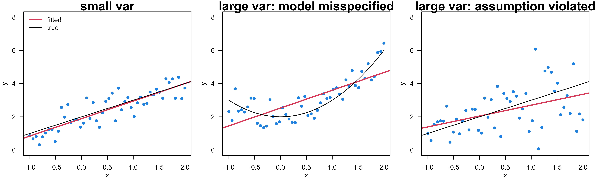

Simple Linear Regression
MATH 4780/MSSC 5780 Regression Analysis
Explore Conditional Relationships
Regression is a tool for making conditional statements:
What should we expect for \(Y\) when \(X = x\)?
. . .
Example. What highway miles per gallon (MPG) (\(Y\)) should we expect for a car with an engine displacement (\(X\)) of 3 liters?
We wanna learn how \(Y\) varies or changes with values of \(X\), not the other way around.
| \(Y\) | \(X\) |
|---|---|
| Response variable | Predictor |
| Outcome variable | Covariate |
| Dependent variable | Independent variable |
| Output variable | Input variable |
| Endogenous variable | Exogenous variable |
| Target variable | Explanatory variable |
| Label | Feature |
| Regressand | Regressor |
| … | … |
| Instead of Asking | Better to Ask |
|---|---|
| Are \(X\) and \(Y\) related? | How does \(Y\) vary across values of \(X\)? |
Week 1 already introduced regression broadly. This slide narrows the focus: simple linear regression is about conditional thinking, not just drawing a line.
| Instead of Asking | Better to Ask |
|---|---|
| Are \(X\) and \(Y\) related? | How does \(Y\) vary across values of \(X\)? |
| Is the slope significant? | Is the estimated change meaningful? |
| What is the best line? | Is a line useful for this question? |
(Linear) Regression Workflow
| Step | Question | Main tool |
|---|---|---|
| 1. Question | Prediction, description, comparison, or causal claim? | Context |
| 2. Data | What do the variables actually measure? | Scatterplot |
| 3. Fit | What line summarizes the pattern? | Least squares/Maximum likelihood |
| 4. Uncertainty | How stable is the fitted line? | Simulation / Intervals |
| 5. Prediction | Mean response or one new observation? | Prediction bands |
| 6. Check | What does the line miss? | Residuals / Sensitivity |
What Research Questions Can Regression Answer
| Step | Question | Main tool |
|---|---|---|
| 1. Question | Prediction, description, comparison, or causal claim? | Context |
. . .
| Goal | MPG Example |
|---|---|
| Prediction | What highway MPG for a 3-liter engine? |
| Description | How does MPG vary with engine size? |
| Comparison | How do automatic and manual transmissions differ in MPG? |
| Causal inference | Would changing \(X\) change \(Y\)? |
. . .
Causal inference requires a carefully designed study and additional assumptions.
. . .
Note
Description and comparison are inferential goals.
| Goal | Example question | Safe wording |
|---|---|---|
| Prediction | What highway MPG for a 3-liter engine? | We predict… |
| Description | How does MPG vary with engine size? | MPG is associated with… |
| Comparison | How do auto and manual transmission differ in MPG? | The group difference is… |
| Causal inference | Would changing \(X\) change \(Y\)? | With careful design of experiment and assumptions |
Make The Question Concrete
Prediction: What highway MPG for a 3-liter engine?
| Target | Meaning |
|---|---|
| Point prediction | One number for MPG |
| Interval prediction | A range of values for MPG |
| Mean response | Average MPG among cars like this |
| New observation | MPG for one future car |
| Generalization | Cars like those in the dataset? |
Data
| Step | Question | Main tool |
|---|---|---|
| 2. Data | What do the variables actually measure? | Scatterplot |
# A tibble: 234 × 11
manufacturer model displ year cyl trans drv cty hwy fl class
<chr> <chr> <dbl> <int> <int> <chr> <chr> <int> <int> <chr> <chr>
1 audi a4 1.8 1999 4 auto… f 18 29 p comp…
2 audi a4 1.8 1999 4 manu… f 21 29 p comp…
3 audi a4 2 2008 4 manu… f 20 31 p comp…
4 audi a4 2 2008 4 auto… f 21 30 p comp…
5 audi a4 2.8 1999 6 auto… f 16 26 p comp…
6 audi a4 2.8 1999 6 manu… f 18 26 p comp…
7 audi a4 3.1 2008 6 auto… f 18 27 p comp…
8 audi a4 quattro 1.8 1999 4 manu… 4 18 26 p comp…
9 audi a4 quattro 1.8 1999 4 auto… 4 16 25 p comp…
10 audi a4 quattro 2 2008 4 manu… 4 20 28 p comp…
# ℹ 224 more rows
Note
In R, use ?mpg to view information about the data set.
| Step | Question | Main tool |
|---|---|---|
| 2. Data | What do the variables actually measure? | Scatterplot |
| Step | MPG example | Main conclusion |
|---|---|---|
| 2. Data | Plot hwy against displ for the 234 configurations in ggplot2::mpg. |
Larger engines generally have lower MPG, but the pattern has clusters and curvature. |
| Element | Meaning |
|---|---|
| unit | One vehicle |
| \(X=\texttt{displ}\) | Engine displacement, in liters |
| \(Y=\texttt{hwy}\) | EPA highway fuel economy, in miles per gallon |
| Sample | 234 configurations from 38 vehicle models |
| Model years | 1999 and 2008 |

Fitting
| Step | Question | Main tool |
|---|---|---|
| 3. Fit | What line summarizes the pattern? | Least squares/Maximum likelihood |

. . .
To find the pattern most consistent with our data, we first need to specify the model being fitted.
Simple Linear Regression Model
Simple Linear Regression
For the \(i\)-th unit in the target population,
\[ \begin{align} Y_i &= f(X_i) + \epsilon_i\\ &= \beta_0 + \beta_1 X_i + \epsilon_i \end{align} \]
- \(Y_i\): the response (random) variable
- \(X_i\): known fixed value of the predictor
- \(\epsilon_i\): random error with \(\epsilon_i \stackrel{iid}{\sim} N(0, \sigma^2)\)
| Piece | Meaning |
|---|---|
| \(\beta_0 + \beta_1 X_i\) | systematic part |
| \(\epsilon_i\) | deviation from the pattern |
| \(\sigma\) | typical vertical scatter |

- \(\beta_0\), \(\beta_1\), and \(\sigma^2\) are fixed but unknown parameters to be estimated from the observed data.
the measurement error model is
Regression Models a Conditional Distribution
Each time we collect a data set, we obtain a different realization because of random variation.

Regression Models a Conditional Distribution
Each time we collect a data set, we obtain a different realization because of random variation.

Regression Models a Conditional Distribution
For data \(\{(x_1,y_1),(x_2,y_2),\dots,(x_n,y_n)\}\), each response \(Y_i\) is assumed to be drawn from a normal distribution conditional on \(X_i=x_i\). The response varies around its conditional mean \(\mu_{Y\mid X=x}\).

The mean response of \(Y\), \(\mu_{Y\mid X}=E(Y\mid X)\), has a straight-line relationship with \(X\), given by the population regression line \(\mu_{Y\mid X}=\beta_0+\beta_1X\).
The conditional variance of \(Y\) does not depend on \(X\).
With the model, our first job is to collect data and estimate the unknown parameters \(\beta_0\), \(\beta_1\) and \(\sigma^2\)!
Model Assumptions
| Assumption | Model statement | What to check visually |
|---|---|---|
| Conditional mean | \(E(Y\mid X=x)\) is approximately linear | Curved pattern? |
| Variability | Spread around the line is similar across \(X\) | Fan shape? |
| Independence | Rows provide distinct information | Clustering in groups, time, or space? |
| Distribution | Residuals are approximately normal | Strong skewness or heavy tails? |

Do not present assumptions as a single all-or-nothing checklist. The mean model is usually the first priority for interpretation; dependence is often the first priority for uncertainty.
Parameter Estimation and Model Fitting
Idea of Fitting
- Interested in \(\beta_0\) and \(\beta_1\) in the sample regression model:
\[\begin{align*} y_i &= f(x_i) + \epsilon_i \\ &= \beta_0 + \beta_1~x_{i} + \epsilon_i, \end{align*}\] or
\[E(y_i \mid x_i) = \mu_{y|x_i} = \beta_0 + \beta_1~x_{i}\]
. . .
Use sample statistics \(b_0\) and \(b_1\), computed from the data, to estimate \(\beta_0\) and \(\beta_1\).
\(\hat{y}_{i}=b_0+b_1x_i\) is the fitted value at \(x_i\). It estimates the conditional mean \(\mu_{Y\mid X=x_i}\) and also serves as the point prediction for an individual response at \(x_i\).
- OK. once we collect the data, we have a sample regression model.
- Here I use small x and y to represent the collected data.
- Given this model, we’re interested in \(\beta_0\) (population parameter for the intercept) and \(\beta_1\) (population parameter for the slope) because once we know \(\beta_0\) and \(\beta_1\), we know the exact shape of \(f\) and we know the relationship of \(y\) and \(x\), and given any value of \(x\), we can predict its corresponding value of \(y\) using the regression line \(\hat{y}_{i} = \beta_0 + \beta_1~x_{i}\).
- But again the population parameters are unknown to us.
- \(\hat{y}_i = E(Y|X_i=x_i)\)
- \(b_0\): intercept of the sample regression line
- \(b_1\): slope of the sample regression line
Fitting a Regression Line \(\hat{Y} = b_0 + b_1X\)
Given the data \(\{ (x_1, y_1), (x_2, y_2), \dots, (x_n, y_n)\},\)
- Which sample regression line is the best?
- Which estimates \(b_0\) and \(b_1\) provide the best-fitting line?

- Now suppose we already get our sample, and now we are trying to use the sample to get a sample regression line, and hopefully, the sample regression line and the population regression line are alike. look similarly.
- So people usually ask
- Which sample regression line is the best?
- What are the best estimators \(b_0\) and \(b_1\) for \(\beta_0\) and \(\beta_1\)?
- After all, given the data, we can generate so many different straight lines, and we need a criterion to help us determine which line is the best in some sense. Right!
MPG Data

That’s see the idea of Ordinary Least Squares visually. Here just showed the data. - Later we will work on the data set together.
Fitted Line and Fitted Value
\(\hat{y}_i = c_0 + c_1x_i\)

- All right, with the data, this figure also shows the least squares regression line, and the fitted value of \(y\) for each \(x\) in the training data, which are those red points.
- The fitted values of y are right on the regression line.
- Now the question is, how do we find this line?
- Given a line, we can have predicted values of y, right?
- Then what is residual on the plot? The residual will be the difference between the true observation y and the fitted value of y given any value of x.
- So a residual in the plot will be a vertical bar at the value of x with two ends of the bar \(y\) and \(\hat{y}\), right?
- (Show on board)
- (add \(y_i = b_0+b_1x_i\) and residual line)
Residuals
A residual is the difference between the observed response and the fitted response value, shown as a vertical bar.
\(e_i = y_i - \hat{y}_i\)

- Here shows all the residuals in vertical bars.
- least squares line is the line such that the sum of all the squared residuals is minimized.
- Why we square the residuals?
- It’s mathematically more convenient.
- Squaring emphasizes larger differences
What does “best” mean? Ordinary Least Squares (OLS)
Choose \(b_0\) and \(b_1\)—and therefore the sample regression line—to minimize the sum of squared residuals \[SS_{res} = e_1^2 + e_2^2 + \dots + e_n^2 = \sum_{i = 1}^n e_i^2.\]
. . .
- Substituting \(e_i=y_i-(b_0+b_1x_i)\) into \(SS_{res}\) gives
\[\begin{align} SS_{res}(b_0, b_1) &= (y_1 - b_0 - b_1x_1)^2 + (y_2 - b_0 - b_1x_2)^2 + \dots + (y_n - b_0 - b_1x_n)^2\\ &= \sum_{i=1}^n(y_i - b_0 - b_1x_i)^2 \end{align}\]
- The resulting value is no larger than \(\sum_{i=1}^n(y_i-a_0-a_1x_i)^2\) for any other pair \((a_0,a_1)\ne(b_0,b_1)\).
- Now the question is How do we get \(b_0\) and \(b_1\) that well estimate \(\beta_0\) and \(\beta_1\)?
- We choose \(b_0\) and \(b_1\), or regression line \(b_0 + b_1x\) that minimizes the sum of squared residuals.
- If we define residual as \(e_i = y_i - \hat{y}_i\), then the sum of squared residuals is \(\sum_{i = 1}^n e_i^2\).
- And this approach that estimates the population parameters \(\beta_0\) and \(\beta_1\) or the population regression line is called Ordinary Least Squares method.
The Least-Squares (Best) Line

A Non-optimal Line

Least Squares Estimates
- The least-squares approach chooses \(b_0\) and \(b_1\) to minimize \(SS_{res}\): \[(b_0, b_1) = \arg\min_{\alpha_0, \alpha_1} \sum_{i=1}^n(y_i - \alpha_0 - \alpha_1x_i)^2\] . . .
\[ \color{red}{b_0 = \overline{y} - b_1\overline{x}}\]
\[\color{red}{b_1 = \frac{\sum_{i=1}^n(x_i - \overline{x})(y_i - \overline{y})}{\sum_{i=1}^n(x_i - \overline{x})^2} = \frac{S_{xy}}{S_{xx}} = r \frac{\sqrt{S_{yy}}}{\sqrt{S_{xx}}}},\] where \(S_{xx} = \sum_{i=1}^n(x_i - \overline{x})^2\), \(S_{yy} = \sum_{i=1}^n(y_i - \overline{y})^2\), \(S_{xy} = \sum_{i=1}^n(x_i - \overline{x})(y_i - \overline{y})\), and \(r\) is the sample correlation coefficient between \(x\) and \(y\).
. . .
What can we learn from the formulas for \(b_0\) and \(b_1\)?
- The LS regression line passes through the centroid.
- \(b_1\) is kinda like a scaled covariance of X and Y.
- \(b_0\) and \(b_1\) are correlated.
Why squared residuals matter
| Residual | Absolute error | Squared error | Consequence |
|---|---|---|---|
| 1 | 1 | 1 | small penalty |
| 2 | 2 | 4 | larger penalty |
| 5 | 5 | 25 | very large penalty |
| 10 | 10 | 100 | can dominate the fit |
Least squares is sensitive to large residuals. That is useful when large errors really matter, dangerous when they are mistakes or special cases.
Formula, but only the useful version
\[ (b_0,b_1)=\arg\min_{a,b}\sum_{i=1}^{n}(y_i-a-bx_i)^2 \]
| Quantity | Interpretation |
|---|---|
| \(b_1\) | estimated change in mean \(Y\) per 1-unit increase in \(X\) |
| \(b_0\) | estimated mean \(Y\) when \(X=0\) |
| \(\hat y_i\) | fitted mean at \(x_i\) |
| \(e_i\) | remaining error after using the line |
Key point: fitting is not the hard part. The hard part is deciding whether the fitted line answers the question.
Fitting
(reg_fit <- lm(formula = hwy ~ displ, data = mpg))
Call:
lm(formula = hwy ~ displ, data = mpg)
Coefficients:
(Intercept) displ
35.70 -3.53 . . .
- \(\widehat{hwy}_{i} = b_0 + b_1 \times displ_{i} = 35.7 - 3.5 \times displ_{i}\)
- \(b_1\): For each one-liter increase in engine displacement, expected highway fuel economy decreases by 3.5 MPG, on average.
. . .
Is the intercept meaningful here?
What did we estimate in the MPG example?
| term | estimate | meaning |
|---|---|---|
| Intercept | 35.70 | Predicted highway MPG at 0 liters; not substantively useful here |
| Engine displacement | -3.53 | Change in expected highway MPG for +1 liter displacement |
Slope Interpretation
coef(reg_fit)(Intercept) displ
35.70 -3.53 | Component | MPG example |
|---|---|
| Direction | larger engines have lower predicted highway MPG |
| Magnitude | about -3.53 MPG per additional liter |
| Units | MPG per liter |
| Population | car models like those in ggplot2::mpg
|
| Range | mainly within observed displacement values |
| Causal language? | not justified from this dataset alone |
Centering Makes the Intercept Meaningful
Centered model:
\[ \widehat{hwy}=c_0+c_1(displ-\overline{displ}) \]
(fit_mpg_c <- lm(hwy ~ displ_c, data = mpg_data))
Call:
lm(formula = hwy ~ displ_c, data = mpg_data)
Coefficients:
(Intercept) displ_c
23.44 -3.53 | model | intercept | slope | intercept meaning |
|---|---|---|---|
| Raw | 35.7 | -3.53 | predicted MPG at 0 liters |
| Centered | 23.4 | -3.53 | predicted MPG at average displacement |
Comparisons are Regressions

Categorical Predictor with 2 Categories
Question: How do automatic and manual transmissions differ in highway MPG?
mpg |>
select(hwy, trans) |>
print(n = 4)# A tibble: 234 × 2
hwy trans
<int> <chr>
1 29 auto(l5)
2 29 manual(m5)
3 31 manual(m6)
4 30 auto(av)
# ℹ 230 more rows. . .
-
trans = auto: automatic transmission -
trans = manual: manual transmission
Indicator Variables
Define a binary indicator variable:
\[ x_i = \begin{cases} 0, & \text{automatic},\\ 1, & \text{manual}. \end{cases} \]
The regression model is
\[ hwy_i = \beta_0+\beta_1x_i+\epsilon_i. \]
| Coefficient | Meaning |
|---|---|
| \(\beta_0\) | Mean highway MPG for automatic transmission |
| \(\beta_1\) | Manual mean minus automatic mean |
| \(\beta_0+\beta_1\) | Mean highway MPG for manual transmission |
. . .
The fitted regression model is
\[ \widehat{hwy}_i = b_0+b_1 x_i \]
- A regression predictor does not have to be quantitative.
- Transmission type has two categories: automatic and manual.
- We represent transmission type using an indicator variable.
- Automatic transmission is the reference category and is assigned a value of zero.
- Manual transmission is assigned a value of one.
- The regression coefficient beta one is therefore a difference between two group means.
- This illustrates an important general idea: a comparison between two groups can be written as a regression model.
The Slope is a Mean Difference
\(\widehat{hwy}_i = 22.29+3.49 x_i\)
. . .
Auto \(x_i=0\)
\[ \begin{aligned} \widehat{hwy}_{\text{auto}} &= 22.29 + 3.49(0)\\ &= 22.29 \text{ MPG} \end{aligned} \]
\(b_0\) is the mean highway MPG for the reference (baseline) category.
Manual \(x_i=1\)
\[ \begin{aligned} \widehat{hwy}_{\text{manual}} &= 22.29 + 3.49(1)\\ &= 25.78 \text{ MPG} \end{aligned} \]
\(b_0+b_1\) is the mean highway MPG for manual transmission.
-
Slope: Cars with manual transmissions are expected to have 3.49 MPG higher highway fuel economy, on average, than cars with automatic transmissions.
- The coefficient compares the other level (
trans = manual) with the baseline (trans = auto).
- The coefficient compares the other level (
- When the indicator variable equals zero, the fitted value equals the intercept.
- Therefore, the intercept is the mean highway MPG for automatic-transmission configurations.
- When the indicator variable equals one, the fitted value is the intercept plus the manual-transmission coefficient.
- The slope is exactly the difference between the two group means.
- We should interpret this as an observed comparison or association, not as a causal effect.
- The data do not establish that changing a vehicle from automatic to manual transmission would cause highway MPG to increase by this amount.
- Automatic and manual vehicle configurations can also differ in engine displacement, vehicle class, manufacturer, and other characteristics.

Estimation for \(\sigma^2\)
Think of \(\sigma^2\) as the variance around the population regression line.
The estimate of \(\sigma^2\), denoted by \(s^2\) or \(\hat{\sigma}^2\), is computed from the data as \[s^2 = \frac{SS_{res}}{df_{res}} = \frac{\sum_{i=1}^n(y_i - \hat{y}_i)^2}{n-2} = MS_{res}\]
- \(s\), the residual standard error, estimates the typical vertical distance between an observed response and the fitted line.
. . .
(summ_reg_fit <- summary(reg_fit))...
Residual standard error: 3.84 on 232 degrees of freedom
...summ_reg_fit$sigma[1] 3.84- So we are done estimation for \(beta\). Let’s talk about the estimation of \(\sigma^2\).
- The estimate of \(\sigma^2\), denoted as \(s^2\) or \(s_{\epsilon}^2\), based on the sample data is residual sum of squares divided by \(n-2\), the degrees of freedom
- It can be shown that \(E(SS_{res}) = (n-2)\sigma^2\). That is, \(s^2\) is an unbiased estimator for \(\sigma^2\). 👍
- measure of the lack of fit of the regression model to the data.
Measure of the Lack of Fit
- If \(\hat{y}_i \approx y_i\), then \(s\) will be small, and the model fits the data well.
- If many fitted values \(\hat y_i\) are far from the observed responses \(y_i\), then \(s\) will be large, indicating substantial unexplained variation or model misspecification.

- If the fitted value using the model is close to the true value, \(\hat{y}_i \approx y_i\), then \(s\) will be small, and the model fits the data well.
- If \(\hat{y}_i\) is far away from \(y_i\), \(s\) may be large, indicating that the model does not fit the data well.
- Let’s see the example shown below. If X and Y have a linear relationship and the relationship is pretty tight, we should see the fitted values on the fitted line are close to the observations, and the \(s\) will be small.
- But if X and Y have a quadratic relationship, but we fit a linear regression, the fitted values will be distant from the observations, and \(s\) may be large.
- The case on the right shows the violation of constant variance. In this case, the fitted values are away from the observations too, resulting in large \(s\), and indicating the model does not fit the data well. OK.
Uncertainty Quantification
Sampling Variation
Our data are one realization among many possible data sets generated by a true data-generating process described by a regression model.
[Repeated Sampling] If we collected another data set, we would obtain a different pair \((b_0, b_1)\).
Suppose the true model is \(Y_i = 5 + 2X_i + \epsilon_i\), \(\epsilon_i \stackrel{iid}{\sim} N(0, 25)\)
. . .
\((b_0, b_1) = (4.67, 2.05)\)

\((b_0, b_1) = (3.56, 2.48)\)

Sampling Variation
We quantify the sampling variation of \((b_0,b_1)\) to assess the uncertainty in using them to estimate \((\beta_0,\beta_1)\).
If \(\epsilon_i\stackrel{iid}{\sim}N(0,\sigma^2)\), we can derive the exact sampling distributions of \(b_0\) and \(b_1\).1
. . .
These sampling distributions yield confidence intervals (CIs) for \(\beta_0\) and \(\beta_1\):
A \((1-\alpha)100\%\) CI for \(\beta_1\) is \(\small \boxed{b_1\pm t_{\alpha/2,\,n-2}\,se(b_1)}\), where \(se(b_1)\) is the standard error of \(b_1\).
A 95% CI for \(\beta_1\) is approximately \(\small \boxed{b_1\pm2\,se(b_1)}\).
. . .
confint(reg_fit) 2.5 % 97.5 %
(Intercept) 34.28 37.12
displ -3.91 -3.15. . .
We would never know whether the CI covers the true parameter values or not.
summ_reg_fit$coefficients
Generating Sampling Distribution from Simulation
Algorithm
-
Create the pretend world
- A true regression model
-
Repeat sampling \(M\) times
- Generate \(M\) data sets of size \(n\) from the true model: \(D^1, \dots, D^M\)
-
Fit the model \(M\) times
- For each data set \(D^m, m = 1, \dots, M\), compute the estimate \(b_1^m\) and confidence intervals \(CI^m\)
-
Quantify uncertainty
- Plot a histogram of the \(M\) estimates \(b_1^1, \dots, b_1^M\) to visualize sampling variation
- Compute the percentage of confidence intervals that contain the true value
True model: \(Y_i = 5 + 2X_i + \epsilon_i\), \(\epsilon_i \stackrel{iid}{\sim} N(0, 25)\)
Generate \(M=100\) simulated data sets, each of size \(n=50\).
Each data set produces a different pair \((b_0,b_1)\).

Sampling Variation of the Slope

Coverage Probabilities
- \(\text{Empirical coverage}=\dfrac{\text{number of CIs containing }\beta_1}{M}\)

What uncertainty is trying to say
| Output | Better interpretation | Common misuse |
|---|---|---|
| Estimate | best single-number summary from this data/model | the truth |
| Standard error | typical estimation noise | measurement error of \(Y\) |
| Confidence interval | plausible values under the model | probability the fixed parameter is in this one interval |
| p-value | incompatibility with a point null | probability the null is true |
Testing the slope: what the test can and cannot say
| Result | What it supports | What it does not prove |
|---|---|---|
| small p-value | data are not very compatible with zero slope under the model | the relationship is linear |
| large p-value | slope is not precisely distinguished from zero | no relationship exists |
| narrow interval | slope is estimated precisely | model assumptions are correct |
| wide interval | data are not very informative | the effect is unimportant |
Hypothesis Testing
\(H_0: \beta_1 = \beta_1^0 \quad H_1: \beta_1 \ne \beta_1^0\)
Under \(H_0\), the test statistic is \(t_{test}=\dfrac{b_1-\color{red}{\beta_1^0}}{se(b_1)}\sim t_{n-2}\).
-
Reject \(H_0\) in favor of \(H_1\) if
- \(|t_{test}| > t_{\alpha/2, \, n-2}\) (critical value method)
- \(\text{p-value} = 2P(t_{n-2} > |t_{test}|) < \alpha\) (p-value method)
. . .
summ_reg_fit$coefficients Estimate Std. Error t value Pr(>|t|)
(Intercept) 35.70 0.720 49.6 2.12e-125
displ -3.53 0.195 -18.2 2.04e-46- By default,
summary()tests \(H_0:\beta_0=0\) and \(H_0:\beta_1=0\).
- in addition to estimation, we may be interested in testing.
- To do the testing on \(\beta_1\), the testing procedure is basically the same as the procedure for population mean \(\mu\) we reviewed last week.
- Usually \(\beta_1^0 = 0\), but we may be interested in other values.
- good growth \(\beta_1 > 2\) car::linearHypothesis()
Interpretation of Testing Results
- \(H_0: \beta_1 = 0 \quad H_1: \beta_1 \ne 0\)
-
Failing to reject \(H_0: \beta_1 = 0\) (large p-value) means that the slope is not estimated precisely enough to distinguish it from zero.
- It does not mean the slope is exactly zero
- It does not prove that no linear relationship exists
- A nonlinear relationship may still exist.
- So back to the testing on \(\beta_1\).
- If we do not reject \(H_0\), it implies there is no linear relationship between \(Y\) and \(X\). Right? Because \(\beta_1\), the slope of the regression line is pretty much 0.
. . .

- But it actually has two cases. One \(x\) and \(y\) may have no relationship at all, or they don’t have linear relationship but have another kind of relationship, like quadratic.
- So we have to be careful when we interpret the testing result. OK.
We have to be more careful and precise on what we are claiming.
Interpretation of Testing Results
Rejecting \(H_0: \beta_1 = 0\) (small p-value) means that the data are not very compatible with a zero slope under the model.
-
The result is consistent with several possibilities:
- the straight-line model may be adequate
- it does not prove that the relationship is linear
- another model may describe the relationship better

Rejecting \(H_0: \beta_1 = 0\) (small p-value) means data are not very compatible with zero slope under the model.
-
It could mean
- the straight-line model is adequate
- it does not prove the relationship is linear
- better results could be obtained with a more complicated model even though there is a linear effect of \(x\) , even though the fitted linear slope differs from zero.
Prediction
Fitting and Predicting
Fitting uses the observed data to estimate a model.
-
Prediction applies the fitted model to unseen data.
- We use the model to predict a response at a new predictor value \(x^{new}\).
. . .
-
Two prediction targets:
Mean response: The mean highway MPG, \(E(Y\mid X=x^{new})\), for cars with \(x^{new}=3\) liters of displacement.
New observation: The highway MPG, \(Y^{new}\), of one future car with \(x^{new}=3\) liters of displacement.
Which prediction is harder? 🤔
Point Prediction
- The fitted value on the regression line is the point prediction for both the mean response and a new observation.
predict(reg_fit, newdata = data.frame(displ = 3)) 1
25.1 
| Target | Question | Usually shown as |
|---|---|---|
| Fitted value | What does the fitted line say at \(x_0\)? | point on line |
| Mean response | What is the average \(Y\) among units with \(X=x_0\)? | confidence interval/band |
| New observation | What might one future \(Y\) be at \(X=x_0\)? | prediction interval/band |
Predictive Uncertainty
-
Mean response: Uncertainty arises because \(\beta_0\) and \(\beta_1\) are estimated from a sample.
- It quantifies uncertainty about the expected response \(E(Y\mid X=x^{new}) = \beta_0 + \beta_1x^{new}\).
-
New observation: The predictive distribution includes both parameter-estimation uncertainty and a new random error \(\epsilon\), \(\beta_0 + \beta_1x^{new} + \epsilon\).
- It quantifies uncertainty about one future response \(Y^{new}\) at \(x^{new}\).
. . .
Which uncertainty is larger? 🤔
. . .
As sample size approaches infinity, \(\beta_0\) and \(\beta_1\) are estimated more and more precisely, and the uncertainty in the linear predictor approaches zero.
Uncertainty for a new observation does not approach zero; it approaches irreducible error standard deviation \(\sigma\).
Interval Prediction
With \(\epsilon_i \stackrel{iid}{\sim} N(0, \sigma^2)\), we have
The \((1-\alpha)100\%\) CI for \(E(y\mid x^{new})\) is \[\small (b_0+b_1x^{new}) \pm t_{\alpha/2, n-2} S\sqrt{\frac{1}{n} + \frac{(x^{new} - \overline{x})^2}{S_{xx}}}\]
The \((1-\alpha)100\%\) prediction interval (PI) for \(y(x^{new})\) is \[\small (b_0+b_1x^{new}) \pm t_{\alpha/2, n-2} S\sqrt{ {\color{red}{1}} + \frac{1}{n} + \frac{(x^{new} - \overline{x})^2}{S_{xx}}}\]
- The PI is wider because it includes uncertainty about \(\beta_0\) and \(\beta_1\) as well as the random error \(\epsilon\).
## CI for the mean response
predict(reg_fit,
newdata = data.frame(displ = 3),
interval = "confidence",
level = 0.95) fit lwr upr
1 25.1 24.6 25.6## PI for a new observation
predict(reg_fit,
newdata = data.frame(displ = 3),
interval = "prediction",
level = 0.95) fit lwr upr
1 25.1 17.5 32.7Confidence Interval vs. Prediction Interval

Confidence Interval vs. Prediction Interval
The interval is shortest when \(x^{new} = \bar{x}\)!

Interpolation vs extrapolation

Prediction requires available predictors
| Predictor type | Safe for future prediction? | Example |
|---|---|---|
| measured before prediction time | usually yes | engine displacement |
| measured after the outcome | no | final exam score to predict course grade |
| derived using the outcome | no | rank computed after observing \(Y\) |
| forecasted predictor | maybe | economic growth forecast for election prediction |
Model Checking
A Fitted Line Can Miss Curvature

Residuals: what remains after the line?

Graphical Diagnostics: Residual Plot
- Residuals should be distributed randomly around 0.
- Check this by plotting residuals against the fitted value of \(y\): \(e_i\) vs. \(\hat{y}_i\)
- Look for a roughly horizontal band with no systematic pattern.

We are looking for - Residuals distributed randomly around 0. - With no visible pattern along the \(x\) or \(y\) axes. - This can be checked by plotting residuals against the fitted value of \(y\). - Here shows a good residual plot. Residuals are around 0, and its variation is more or less the same across different values of \(\hat{y}\). - There is no significant pattern in the plot.
Residual Pattern Reveals the Miss

Not looking for…
Fan shapes

- We are not looking for a plot that has a fan shape.
Not looking for…
Distinct groups or clusters

- We are not looking for a plot that has Groups of patterns
Not looking for…
Residuals correlated with predicted values

- We also don’t want Residuals to be correlated with predicted values
Not looking for…
Any patterns!

- We basically don’t want the residuals show Any patterns!
- If \(X\) and \(Y\) are not linearly related, or the residual plot exists some pattern, some data transformation is needed. Or use another model.
MPG Data Residuals
plot(reg_fit, which = 1, col = "blue", las = 1)
Nonconstant Variance Changes Uncertainty
Considerations in the Usage of Regression
Considerations in Regression: Extrapolation
- Regression models are most reliable for interpolation within the range of predictor values used to fit the model.


- First, Regression models are intended as interpolation equations over the range of the regressors used to fit the model.
- Regression does a really bad job for extrapolation.
- Look at this figure for example.
- Suppose the data we collected have the range of X like this.
- Based on the data, we train our model, and estimate the parameters for prediction and inference.
- Our prediction and inference will be more plausible or convicing when the new \(x\) is within the range of \(X\).
- Again, the only information we have is our data.
- When we do extrapolation, it’s like doing a prediction or inference without any reliable information at hand.
- Our conclusion may be totally wrong. Based on the collected data, we thought x and y are linear related.
- But the true x-y relationship may not be linear at all, and because our data only cover a small range of \(X\), we don’t know what really happens outside the range of data.
- We cannot say much about the predictive mean response or observation outside the range of \(X\), and we cannot conclude the relationship between x and y outside the range as well.
Considerations in the Use of Regression: Outliers
- Outlier: An observation with an unusual response value relative to other observations, especially given its \(x\) value.

- The second consideration is outlier.
- it might be just measurement error.
- If it is not an typo, we have to look into this point with great care, and see why this happened and see if we need to do some correction to it.
- We will talk about outliers in detail later in this course.
Considerations in Regression: Influential Points
- Influential point: An observation whose inclusion substantially changes the fitted regression results; it often has an unusual \(x\) value.

- Our inference and prediction may be totally distorted just because of one single influential point. So again, we have to very careful about it.
Considerations in Regression: Causal Interpretation?


- Regression is just a model. It does not tell you X-Y’s relationship is correlation relationship or causal relationship.
- It is the person who uses the model tell the relationship.
- So we have to be careful when interpreting regression result.
- They are correlated, not one causes the other.
- Actually, there is another factor that causes the sales and # of drownings to go up and down together.
Considerations in Regression: Unknown Predictor
Consider maximum daily electrical load \((Y)\) and maximum daily temperature \((X)\).
To predict tomorrow’s maximum load, we must first know or forecast tomorrow’s maximum temperature.
The load prediction is therefore conditional on the temperature forecast.

Outlier, leverage, influence
| Term | Plain meaning | Main question |
|---|---|---|
| Outlier | unusual \(Y\) given its \(X\) | does the model miss this case? |
| High leverage | unusual \(X\) value | can this point pull the line? |
| Influential | changes the fitted result | does the conclusion depend on it? |
Influence is about what changes

Leave-one-out sensitivity

\(R^2\): useful but limited

| \(R^2\) says | \(R^2\) does not say |
|---|---|
| in-sample variance explained | causal validity |
| fit relative to mean-only model | linearity is adequate |
| descriptive strength | prediction works on new data |
| one-number summary | conclusions are robust |
Interpretation and misuse
Association is not automatically causation
| Regression output | Causal interpretation needs |
|---|---|
| slope of \(Y\) on \(X\) | a causal question |
| adjustment variables | pre-treatment covariates, not post-treatment variables |
| small p-value | not enough |
| good prediction | not enough |
| observational data | design and assumptions about confounding |
Regression conclusion template
Among [population], over [range of X], a one-unit increase in [X] is associated with an estimated [change] in the conditional mean of [Y]. The uncertainty interval is [interval]. This is [prediction / description / comparison / causal claim], and the main limitations are [diagnostics / sampling / confounding / extrapolation].
Checklist Before Reporting a Regression Analysis
| Check | Ask this before you report |
|---|---|
| Goal | prediction, description, comparison, or causality? |
| Scale | are units and transformations clear? |
| Range | interpolation or extrapolation? |
| Uncertainty | mean response or new observation? |
| Diagnostics | what pattern remains in residuals? |
| Sensitivity | do a few observations drive the result? |
| Causality | what design or assumptions justify causal language? |
Footnotes
We can also derive an exact sampling distribution for an estimator of \(\sigma^2\). The framework used in this course for inference, prediction, and uncertainty quantification is the frequentist approach.↩︎